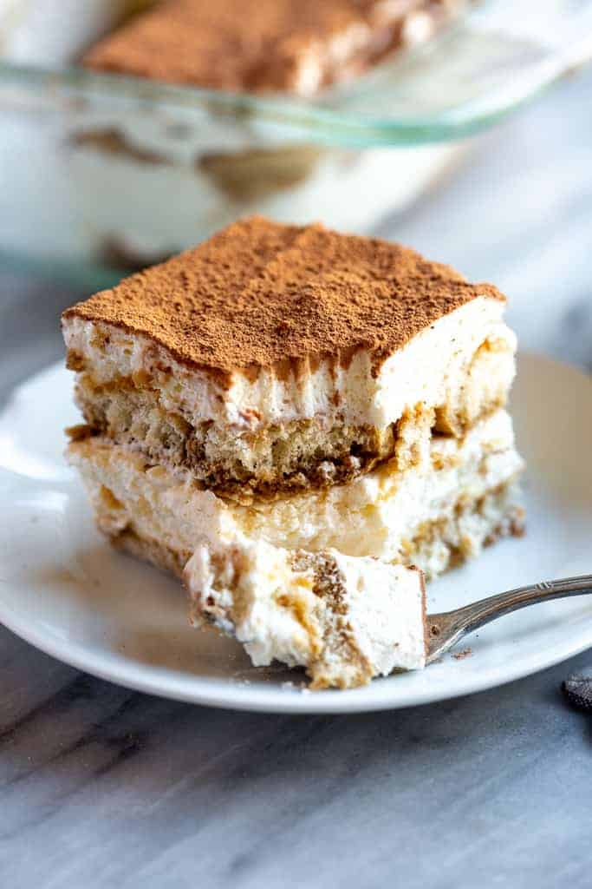

Tiramisu

| Ingredients |
Measurements |
| Heavy whipping cream |
1 1/2 Cups |
| Mascarpone cheese |
8 Ounces |
| Granulated Sugar |
1/3 Cups |
| Vanilla Extract |
1 Teaspoon |
| Cold Coffee |
1 1/2 Cups |
| Lady Fingers |
1 Package |
| Cocoa Powder |
Enough to dust over the top |
Click here for the Original Recipe
How to make it
- Beat the mascarpone, cream, sugar, and vanilla together until stiff peaks
- Dip the lady finger into the coffee, make sure to not let them soak, only dip!
- Orderly lay the lady fingers into a container
- Smooth a layer of mascarpone ontop of the lady fingers
repeat set 3-4 until you have used all your ingredients or until you are satisfied with the result
- Then dust the cocoa powder ontop of it to taste. If you intend to freeze it, do not add the cocoa powder until it has thawed night
- Finally leave in the refigerator for 2 to 3 days